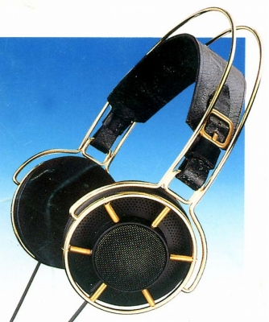

HD-1000CHARLESTON

■価格 65,000円
■型式 ダイナミック型オープンエアタイプ
■振動板
■インピーダンス 140Ω
■再生周波数帯域 18-25,000Hz -3ｄB
■許容入力
■感度 96ｄB
■コード 3ｍOFCステレオ3.5/6.3mmプラグ
■重量 210g
■発売 1993年6月
■販売終了
■備考 歪率 ＜0.3％
ヘッドフォンスタンド付属
1990年のヘッドセットデサインコンテストに入賞の女性デザイナーの
作品をリデザインした限定生産品（10,000台）→カタログ文書参照
コード交換不可
一部にゼンハイザー50周年記念モデルとの記述があるが
50周年は1995年なのでそうした事実は無いと思われる。